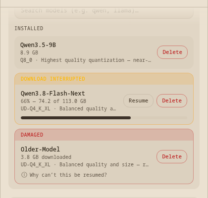
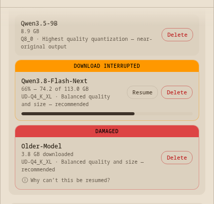
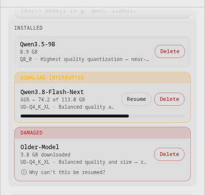
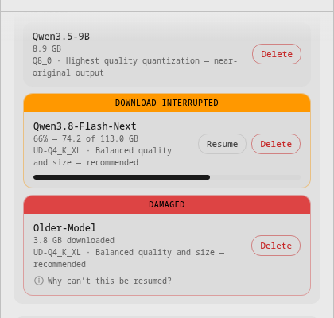
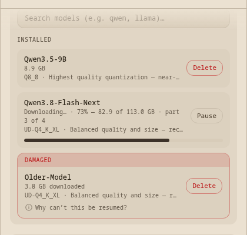
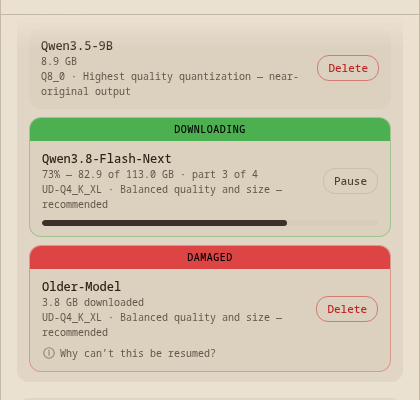
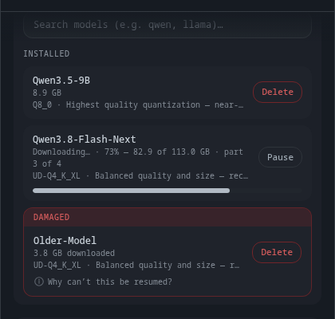
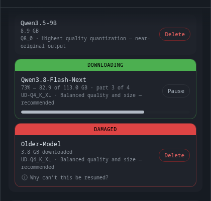
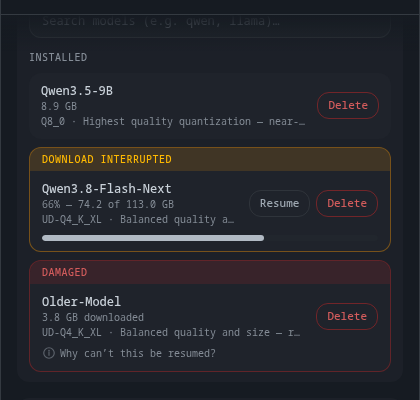
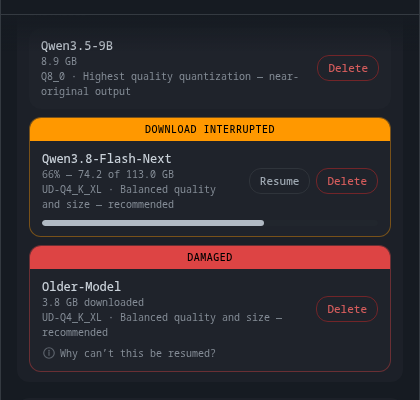

Last round's banner was pale amber text on a pale amber tint — 1.07:1 on Crème, 1.14:1 on Light. The words were there; they could not be seen.
→ All three banners are now a solid status colour with black text — 9.7:1, 7.6:1 and 5.0:1, identical in every theme.




A running download now wears a green banner in the same shape as the other two, and all three are centred.
→ Confirm the green, the wording, and the centring.
The detail line lost its state word — it was "Downloading… · 73% — 82.9 of 113.0 GB · part 3 of 4" wrapping onto two lines.
→ The banner says the state, so the line below carries only numbers and fits on one.


The quality line no longer ends in "…" — it shows in full and wraps if it needs to.
→ Confirm this is what "its own line" meant.
Round 3 — your four changes, plus one defect I caught — your answers
Space flips Before/After. The first point is a bug I introduced last round and found by measuring rather than looking — worth seeing even though it is already fixed.
| Item | # | Point | Answer | Note |
|---|
Confirmed and left alone
- A2 — the damaged banner stays red. Yellow means "stopped, you can fix it"; red means "stopped, you can't".
- B5, C6 — the pause round trip and the (i) explanation are as you saw them.
What happens next
If these four are right, the design is settled and everything from here is machinery you won't see until it works: the record written beside each download, the honest list, the disk-space fix, and Resume actually resuming.